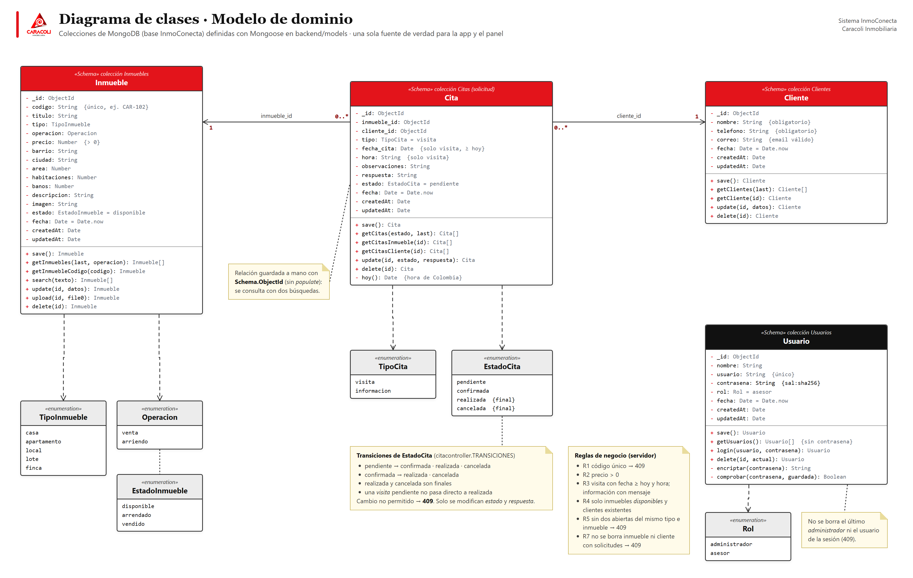
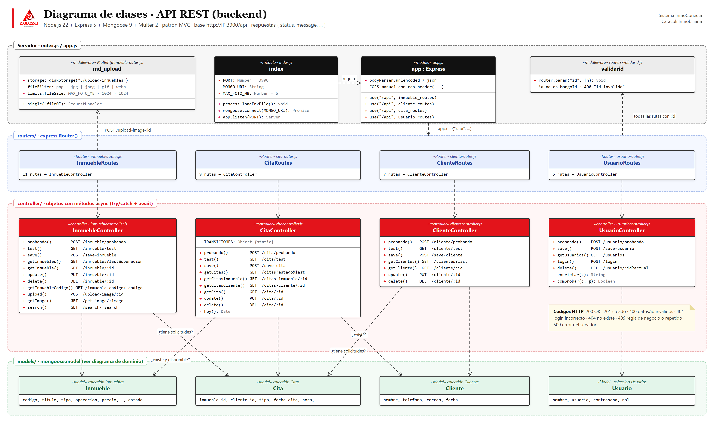
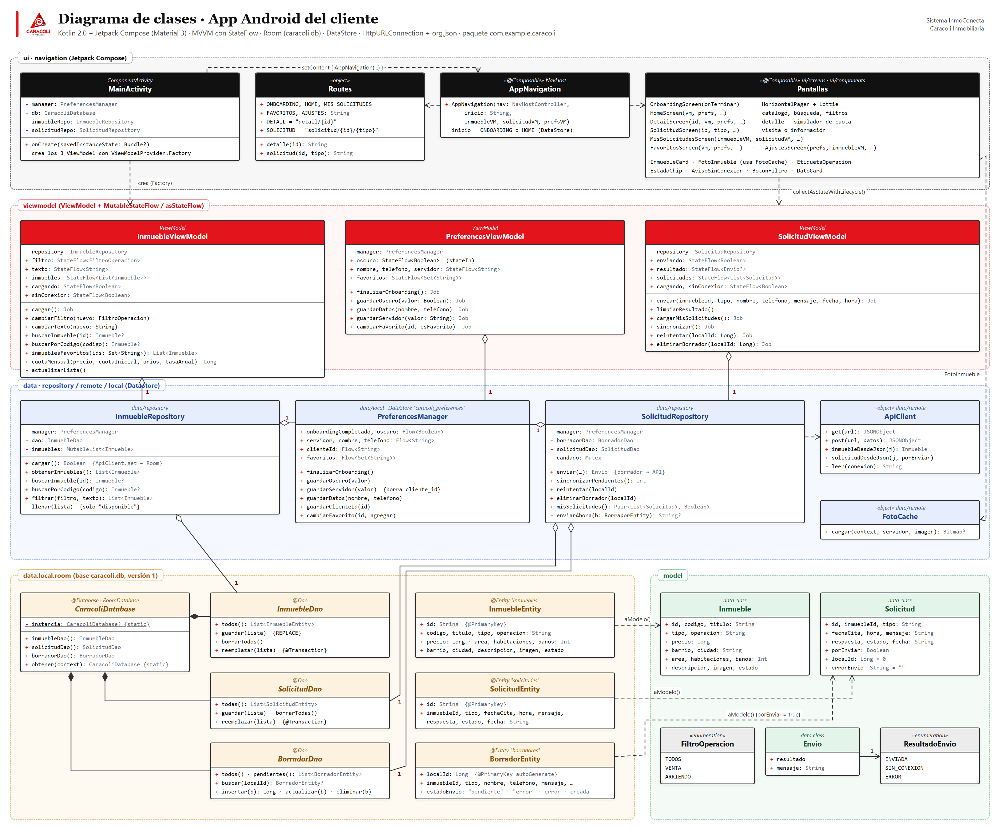
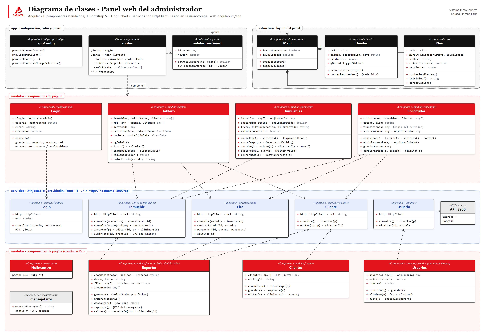

El sistema InmoConecta tiene tres partes que comparten una sola base de datos: la app Android del cliente, el panel web en Angular de la inmobiliaria y la API REST en Node.js + Express, que es la única que se conecta a MongoDB. Los diagramas se sacaron del código fuente del repositorio (nombres de clases, atributos y métodos tal como están escritos).
| Figura | Diagrama | Qué muestra | Fuente en el repositorio |
|---|---|---|---|
| 1 | Modelo de dominio | Las 4 colecciones de MongoDB (Inmueble, Cita, Cliente, Usuario), sus atributos, las enumeraciones de valores permitidos, las relaciones por ObjectId y las reglas de negocio que valida el servidor. | backend/models/*.js, backend/controller/*.js |
| 2 | API REST (backend) | Capas del servidor: index/app, middlewares (validarid, Multer), routers, controladores con cada ruta HTTP y los modelos que usa cada uno. | backend/index.js, app.js, routers/, controller/ |
| 3 | App Android (MVVM) | MainActivity, navegación, pantallas, ViewModels con StateFlow, repositorios, DataStore, cliente HTTP, base Room (DAO y entidades) y modelos. | android/app/src/main/java/com/example/caracoli/ |
| 4 | Panel web (Angular) | Configuración, rutas y guard, layout (Main, Header, Nav), componentes de página y servicios HTTP. | web-angular/src/app/ |
| Símbolo | Significado |
|---|---|
| Asociación navegable con multiplicidad (ej. una Cita pertenece a 1 Inmueble; un Inmueble tiene 0..* Citas). | |
| Dependencia: una clase usa a otra (llama sus métodos, la importa o la consulta). | |
| Agregación: la clase recibe la otra en su constructor (ej. el ViewModel tiene su Repository). | |
| Composición: la clase crea y es dueña de la otra (ej. CaracoliDatabase y sus DAO; Main con Header y Nav). | |
| «Schema» · «enumeration» · «@Composable» | Estereotipo: tipo de elemento según la tecnología (esquema de Mongoose, lista de valores, función Composable, componente de Angular, objeto Kotlin). |
| Nota | Nota con reglas de negocio o aclaraciones, unida con línea punteada al elemento que explica. |
| + público · - privado | Visibilidad de atributos y métodos. Subrayado = miembro estático. El tipo va después de los dos puntos. |



